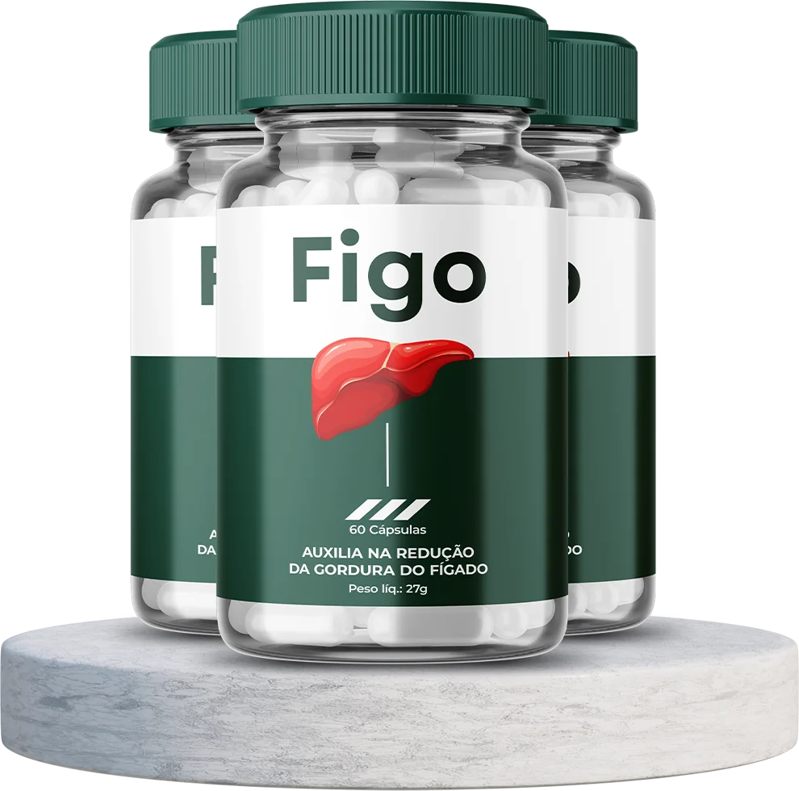

Recupere a Saúde do Seu Fígado
COM APENAS 2 CÁPSULAS POR DIA!
Apenas 2 cápsulas ao dia para ajudar você a:
- Eliminar toxinas acumuladas
- Perder peso de forma saudável
- Fortalecer a função hepática
Figo é um dos primeiros produtos especialmente desenvolvidos para desintoxicar e restaurar a vitalidade do fígado. A oportunidade ideal para começar a cuidar da sua saúde!
